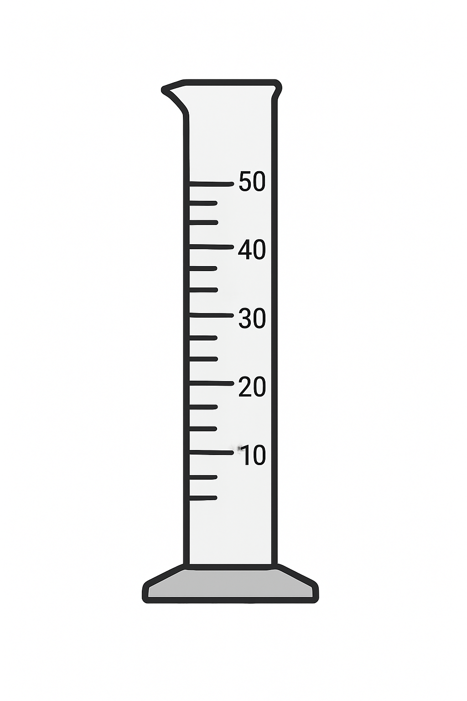
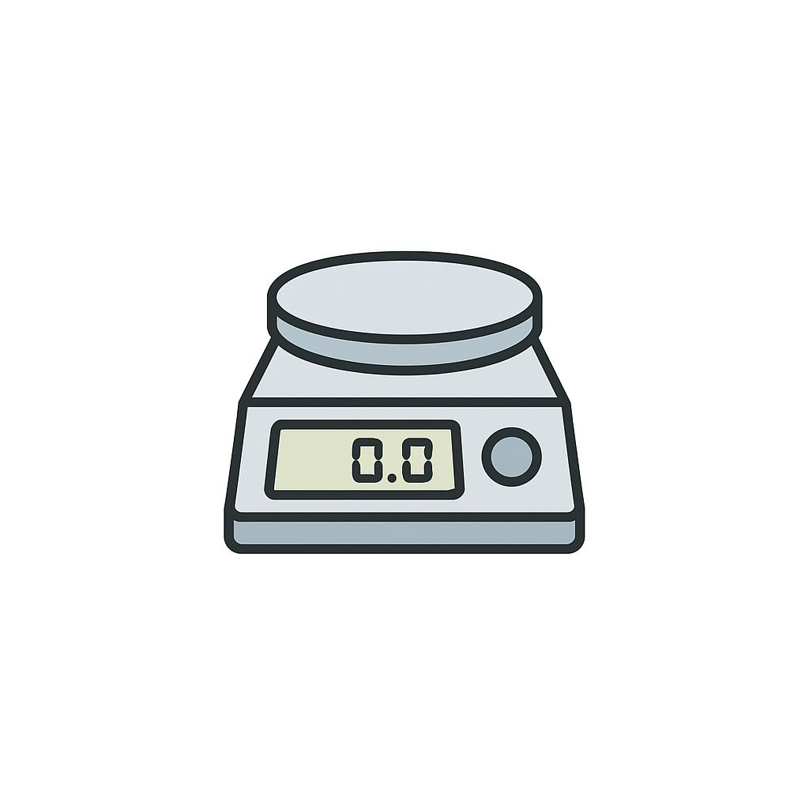

Préparation au CCF 1
Chimie 1 et Chimie 2
| Nom : | |
| Prénom : | |
| Date : |
Comment diminuer l’acidité d’une boisson ?
MATÉRIEL
- Jus de citron
- Bécher ①, bécher ②
- Fiole jaugée de 100 mL
- Pipette jaugée de 10 mL avec dispositif d’aspiration
- Stylo‑pH
- Spatule
- Balance
- Dynamomètre
- Éprouvette graduée
- Pissette d’eau distillée
- Sucre en poudre
Problématique
Paul, sujet aux brûlures d’estomac, trouve que son cocktail à base de jus de citron est trop acide.
Son amie Alice lui propose de rajouter du sucre. A‑t‑elle raison ?
Le jus de citron pur
- Verser environ 20 mL de jus de citron dans le bécher ①. Mesurer le pH à l’aide du stylo‑pH : pH = ………………
- Cochez la bonne réponse. Le jus de citron pur est :
Appel n° 1Faire vérifier la mesure de pH.
Le jus de citron dilué
- On souhaite préparer une solution de jus de citron diluée au 1/10e par rapport au jus de citron pur.
Appel n° 2Effectuer les opérations suivantes en présence de l’examinateur :
- Prélever 10 mL de jus de citron (bécher ①) à l’aide d’une pipette jaugée munie de son dispositif d’aspiration.
- Introduire le contenu de la pipette dans une fiole jaugée de 100 mL.
- Compléter la fiole avec de l’eau distillée.
- Agiter la solution et verser environ 20 mL de cette solution dans le bécher ②.
- Après avoir rincé le stylo‑pH à l’eau du robinet, mesurer le pH de la solution obtenue (bécher ②). pH = ………………
- Cochez les bonnes réponses.
Le jus de citron sucré
-
a. On souhaite ajouter 6 g de sucre en poudre (équivalent d’un morceau de sucre) au bécher ①. Pour mesurer la quantité de sucre à ajouter, on utilise :
b. Préparer cette solution de jus de citron sucré en remuant à l’aide d’une spatule afin de dissoudre le sucre.

- Mesurer le pH de la solution obtenue. pH = ……………… Appel n° 3
-
Cochez les bonnes réponses :
Conclusion
- En déduire le(s) facteur(s) qui diminue(nt) l’acidité.
- La proposition faite à Paul est‑elle adaptée ?
Remise en état du poste de travail.
Appel n° 4
Évaluation
| Catégorie | Compétence | Capacités à vérifier | Questions | Appréciation du niveau d’acquisition |
|---|---|---|---|---|
| Activité expérimentale | S’approprier |
– Rechercher, extraire et organiser l’information utile. – Comprendre le travail à réaliser. – Montrer qu’on connaît le vocabulaire, les symboles, les grandeurs, les unités mises en œuvre. |
6. | ★★ |
| Réaliser |
– Organiser son poste de travail. – Mettre en œuvre un protocole expérimental. – Utiliser le matériel choisi ou mis à disposition. – Manipuler avec assurance dans le respect des règles élémentaires de sécurité. – Utiliser une ou plusieurs relations données. |
1, 3, 4 et 7 | ★★ | |
| Valider |
– Exploiter et interpréter des observations, des mesures. – Vérifier les résultats obtenus. – Valider une information, une propriété, une loi. |
2 | ★★ | |
| Compte rendu écrit | Communiquer |
– Rendre compte d’observations et des résultats des travaux réalisés. – Présenter, formuler une conclusion. |
5, 8, 10 | ★★ |
Note sur 10 = … × 0,5